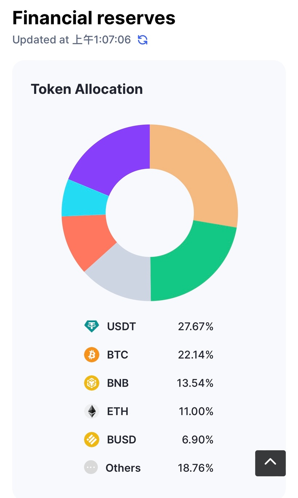
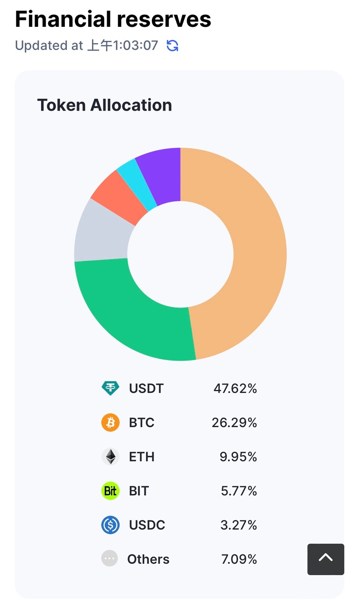

不管Crypto algo trading多好賺，筆者身邊的朋友仍是不敢踏入Crypto世界，原因之一正是CEX風險。早幾篇Patreon文章教過大家防範CEX風險，以免再中類似FTX的伏。（不過，小弟在此欣慰地宣布，這幾個月的利潤已完全cover所有FTX的損失，所以，Crypto世界真的是有危就有機。）
早一個月的文章教大家留意CEX的token價格、留意交易所內的產品的價格，以及留意交易所儲備。除了這幾點外，也可以看相關穩定幣價。以Binance為例，BUSD的價格可以讓市場知道相關風險。如果BUSD出現明顯depeg，那Binance的liquidity risk便相對增加。原因有幾個：可以是market maker離場不再維持pegging；可以是Binance沒足夠資金維持pegging；可以是speculator認為其會倒閉而大力沽出BUSD。
早一個月FUD Binance，BUSD仍維持0.995以上，只是depeg了0.5%，仍然健康。倒是USDC FUD時，depeg得比FUD Binance嚴重，大約到0.987，即1.3%，即市場認為Binance受影響的機會/程度為1%左右。
除了BUSD價外，市值亦須要被留意。BUSD market cap由高峰的23B跌至8B。這個影響是來自於SEC控告Paxos的BUSD，指其不能再發行，因而令市場慢慢淡出使用BUSD。
近一個月一直有很多朋友inbox問這事件是否會影響Binance，會否令Binance倒閉。那這便要看看Binance有多少資產在BUSD上。可以看看下圖：

Binance的73B reserve中，只有6.9%是在BUSD中，因此，風險小得很。
除了看受影響的幣種佔交易所儲備比率外，也可以看看交易所儲備的分散程度。以上述Binance case為例，最集中的是USDT，但也只是27%。再看看Bybit，為下圖：

資產較為集中，最大份為USDT，足足48%！因此，相比Binance，Bybit counterparty risk大一些。其他交易所就不在此詳述了，利申我現時炒賣主要用Binance及Bybit，大約7:3分吧。
最後，補充多個指標給大家。如果想知道某交易所是否打turn（造虛假成交），除了看website visit量以外，可以算一算成交除reserve。例如Binance的成交除reserve為14/73B = 19%；而Bybit則為1.2/3.2B = 37.5%。數字愈少，成交愈可信，當然Bybit的比率也很健康；不過有些交易所比率高至接近1，用家須留意一下。
總括來說，從：
1. 交易所幣價
2. 交易所內的價格
3. 交易所reserve
4. 相關穩定幣價
5. 相關穩定幣市值
6. 交易所reserve是否分散
7. 交易所成交/reserve比率
可以看到交易所的風險。
希望大家能傍身。